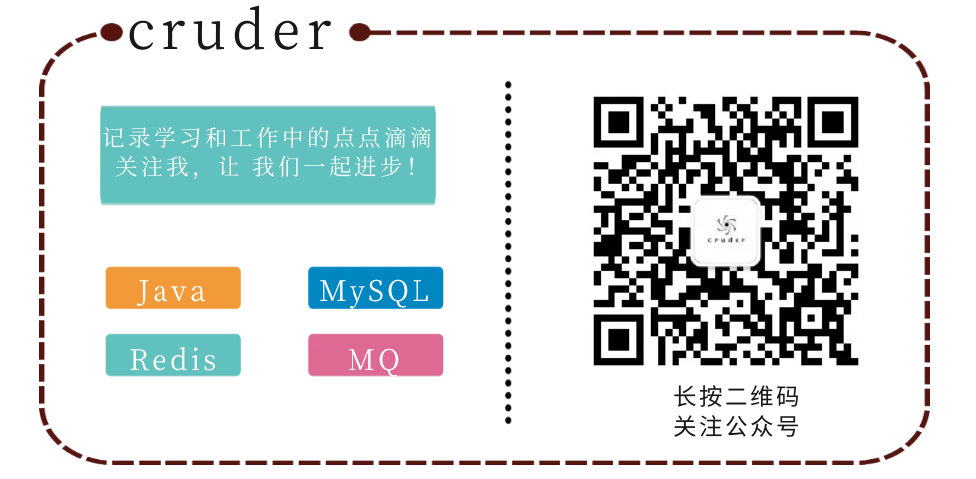

简洁清爽的代码风格应该是大多数工程师所期待的。在工作中笔者常常因为起名字而纠结，夸张点可以说是编程5分钟，命名两小时！究竟为什么命名成为了工作中的拦路虎。
每个公司都有不同的标准，目的是为了保持统一，减少沟通成本，提升团队研发效能。所以本文中是笔者结合阿里巴巴开发规范，以及工作中的见闻针对Java领域相关命名进行整理和总结，仅供参考。
好的命名能体现出代码的特征，含义或者是用途，让阅读者可以根据名称的含义快速厘清程序的脉络。不同语言中采用的命名形式大相径庭，Java中常用到的命名形式共有三种，既首字母大写的UpperCamelCase，首字母小写的lowerCamelCase以及全部大写的并用下划线分割单词的UPPER_CAMEL_UNSER_SCORE。通常约定，类一般采用大驼峰命名，方法和局部变量使用小驼峰命名，而大写下划线命名通常是常量和枚举中使用。
| 类型 | 约束 | 例 |
|---|---|---|
| 项目名 | 全部小写，多个单词用中划线分隔‘-’ | spring-cloud |
| 包名 | 全部小写 | com.alibaba.fastjson |
| 类名 | 单词首字母大写 | Feature, ParserConfig,DefaultFieldDeserializer |
| 变量名 | 首字母小写，多个单词组成时，除首个单词，其他单词首字母都要大写 | password, userName |
| 常量名 | 全部大写，多个单词，用'_'分隔 | CACHE_EXPIRED_TIME |
| 方法 | 同变量 | read(), readObject(), getById() |
包名统一使用小写，点分隔符之间有且仅有一个自然语义的英文单词或者多个单词自然连接到一块（如 springframework，deepspace不需要使用任何分割）。包名统一使用单数形式，如果类命有复数含义，则可以使用复数形式。
包名的构成可以分为以下几四部分【前缀】 【发起者名】【项目名】【模块名】。常见的前缀可以分为以下几种：
| 前缀名 | 例 | 含义 |
|---|---|---|
| indi（或onem ） | indi.发起者名.项目名.模块名.…… | 个体项目，指个人发起，但非自己独自完成的项目，可公开或私有项目，copyright主要属于发起者。 |
| pers | pers.个人名.项目名.模块名.…… | 个人项目，指个人发起，独自完成，可分享的项目，copyright主要属于个人 |
| priv | priv.个人名.项目名.模块名.…… | 私有项目，指个人发起，独自完成，非公开的私人使用的项目，copyright属于个人。 |
| team | team.团队名.项目名.模块名.…… | 团队项目，指由团队发起，并由该团队开发的项目，copyright属于该团队所有 |
| 顶级域名 | com.公司名.项目名.模块名.…… | 公司项目，copyright由项目发起的公司所有 |
类名使用大驼峰命名形式，类命通常时名词或名词短语，接口名除了用名词和名词短语以外，还可以使用形容词或形容词短语，如Cloneable，Callable等，表示实现该接口的类有某种功能或能力。对于测试类则以它要测试的类开头，以Test结尾，如HashMapTest。
对于一些特殊特有名词缩写也可以使用全大写命名，比如XMLHttpRequest，不过笔者认为缩写三个字母以内都大写，超过三个字母则按照要给单词算。这个没有标准如阿里巴巴中fastjson用JSONObject作为类命，而google则使用JsonObjectRequest命名，对于这种特殊的缩写，原则是统一就好。
| 属性 | 约束 | 例 |
|---|---|---|
| 抽象类 | Abstract 或者 Base 开头 | BaseUserService |
| 枚举类 | Enum 作为后缀 | GenderEnum |
| 工具类 | Utils作为后缀 | StringUtils |
| 异常类 | Exception结尾 | RuntimeException |
| 接口实现类 | 接口名+ Impl | UserServiceImpl |
| 领域模型相关 | /DO/DTO/VO/DAO | 正例：UserDAO 反例： UserDo， UserDao |
| 设计模式相关类 | Builder，Factory等 | 当使用到设计模式时，需要使用对应的设计模式作为后缀，如ThreadFactory |
| 处理特定功能的 | Handler，Predicate, Validator | 表示处理器，校验器，断言，这些类工厂还有配套的方法名如handle，predicate，validate |
| 测试类 | Test结尾 | UserServiceTest， 表示用来测试UserService类的 |
| MVC分层 | Controller，Service，ServiceImpl，DAO后缀 | UserManageController，UserManageDAO |
方法命名采用小驼峰的形式，首字小写，往后的每个单词首字母都要大写。 和类名不同的是，方法命名一般为动词或动词短语，与参数或参数名共同组成动宾短语，即动词 + 名词。一个好的函数名一般能通过名字直接获知该函数实现什么样的功能。
注：Prefix-前缀，Suffix-后缀，Alone-单独使用
| 位置 | 单词 | 意义 | 例 |
|---|---|---|---|
| Prefix | is | 对象是否符合期待的状态 | isValid |
| Prefix | can | 对象能否执行所期待的动作 | canRemove |
| Prefix | should | 调用方执行某个命令或方法是好还是不好,应不应该，或者说推荐还是不推荐 | shouldMigrate |
| Prefix | has | 对象是否持有所期待的数据和属性 | hasObservers |
| Prefix | needs | 调用方是否需要执行某个命令或方法 | needsMigrate |
| 单词 | 意义 | 例 |
|---|---|---|
| ensure | 检查是否为期待的状态，不是则抛出异常或返回error code | ensureCapacity |
| validate | 检查是否为正确的状态，不是则抛出异常或返回error code | validateInputs |
| 位置 | 单词 | 意义 | 例 |
|---|---|---|---|
| Suffix | IfNeeded | 需要的时候执行，不需要的时候什么都不做 | drawIfNeeded |
| Prefix | might | 同上 | mightCreate |
| Prefix | try | 尝试执行，失败时抛出异常或是返回errorcode | tryCreate |
| Suffix | OrDefault | 尝试执行，失败时返回默认值 | getOrDefault |
| Suffix | OrElse | 尝试执行、失败时返回实际参数中指定的值 | getOrElse |
| Prefix | force | 强制尝试执行。error抛出异常或是返回值 | forceCreate, forceStop |
| 位置 | 单词 | 意义 | 例 |
|---|---|---|---|
| Prefix | blocking | 线程阻塞方法 | blockingGetUser |
| Suffix | InBackground | 执行在后台的线程 | doInBackground |
| Suffix | Async | 异步方法 | sendAsync |
| Suffix | Sync | 对应已有异步方法的同步方法 | sendSync |
| Prefix or Alone | schedule | Job和Task放入队列 | schedule, scheduleJob |
| Prefix or Alone | post | 同上 | postJob |
| Prefix or Alone | execute | 执行异步方法（注：我一般拿这个做同步方法名） | execute, executeTask |
| Prefix or Alone | start | 同上 | start, startJob |
| Prefix or Alone | cancel | 停止异步方法 | cancel, cancelJob |
| Prefix or Alone | stop | 同上 | stop, stopJob |
| 位置 | 单词 | 意义 | 例 |
|---|---|---|---|
| Prefix | on | 事件发生时执行 | onCompleted |
| Prefix | before | 事件发生前执行 | beforeUpdate |
| Prefix | pre | 同上 | preUpdate |
| Prefix | will | 同上 | willUpdate |
| Prefix | after | 事件发生后执行 | afterUpdate |
| Prefix | post | 同上 | postUpdate |
| Prefix | did | 同上 | didUpdate |
| Prefix | should | 确认事件是否可以发生时执行 | shouldUpdate |
| 单词 | 意义 | 例 |
|---|---|---|
| initialize | 初始化。也可作为延迟初始化使用 | initialize |
| pause | 暂停 | onPause ，pause |
| stop | 停止 | onStop，stop |
| abandon | 销毁的替代 | abandon |
| destroy | 同上 | destroy |
| dispose | 同上 | dispose |
| 单词 | 意义 | 例 |
|---|---|---|
| contains | 是否持有与指定对象相同的对象 | contains |
| add | 添加 | addJob |
| append | 添加 | appendJob |
| insert | 插入到下标n | insertJob |
| put | 添加与key对应的元素 | putJob |
| remove | 移除元素 | removeJob |
| enqueue | 添加到队列的最末位 | enqueueJob |
| dequeue | 从队列中头部取出并移除 | dequeueJob |
| push | 添加到栈头 | pushJob |
| pop | 从栈头取出并移除 | popJob |
| peek | 从栈头取出但不移除 | peekJob |
| find | 寻找符合条件的某物 | findById |
| 单词 | 意义 | 例 |
|---|---|---|
| create | 新创建 | createAccount |
| new | 新创建 | newAccount |
| from | 从既有的某物新建，或是从其他的数据新建 | fromConfig |
| to | 转换 | toString |
| update | 更新既有某物 | updateAccount |
| load | 读取 | loadAccount |
| fetch | 远程读取 | fetchAccount |
| delete | 删除 | deleteAccount |
| remove | 删除 | removeAccount |
| save | 保存 | saveAccount |
| store | 保存 | storeAccount |
| commit | 保存 | commitChange |
| apply | 保存或应用 | applyChange |
| clear | 清除数据或是恢复到初始状态 | clearAll |
| reset | 清除数据或是恢复到初始状态 | resetAll |
| 单词 | 意义 |
|---|---|
| get获取 | set 设置 |
| add 增加 | remove 删除 |
| create 创建 | destory 移除 |
| start 启动 | stop 停止 |
| open 打开 | close 关闭 |
| read 读取 | write 写入 |
| load 载入 | save 保存 |
| create 创建 | destroy 销毁 |
| begin 开始 | end 结束 |
| backup 备份 | restore 恢复 |
| import 导入 | export 导出 |
| split 分割 | merge 合并 |
| inject 注入 | extract 提取 |
| attach 附着 | detach 脱离 |
| bind 绑定 | separate 分离 |
| view 查看 | browse 浏览 |
| edit 编辑 | modify 修改 |
| select 选取 | mark 标记 |
| copy 复制 | paste 粘贴 |
| undo 撤销 | redo 重做 |
| insert 插入 | delete 移除 |
| add 加入 | append 添加 |
| clean 清理 | clear 清除 |
| index 索引 | sort 排序 |
| find 查找 | search 搜索 |
| increase 增加 | decrease 减少 |
| play 播放 | pause 暂停 |
| launch 启动 | run 运行 |
| compile 编译 | execute 执行 |
| debug 调试 | trace 跟踪 |
| observe 观察 | listen 监听 |
| build 构建 | publish 发布 |
| input 输入 | output 输出 |
| encode 编码 | decode 解码 |
| encrypt 加密 | decrypt 解密 |
| compress 压缩 | decompress 解压缩 |
| pack 打包 | unpack 解包 |
| parse 解析 | emit 生成 |
| connect 连接 | disconnect 断开 |
| send 发送 | receive 接收 |
| download 下载 | upload 上传 |
| refresh 刷新 | synchronize 同步 |
| update 更新 | revert 复原 |
| lock 锁定 | unlock 解锁 |
| check out 签出 | check in 签入 |
| submit 提交 | commit 交付 |
| push 推 | pull 拉 |
| expand 展开 | collapse 折叠 |
| begin 起始 | end 结束 |
| start 开始 | finish 完成 |
| enter 进入 | exit 退出 |
| abort 放弃 | quit 离开 |
| obsolete 废弃 | depreciate 废旧 |
| collect 收集 | aggregate 聚集 |
变量是指在程序运行中可以改变其值的量，包括成员变量和局部变量。变量名由多单词组成时，第一个单词的首字母小写，其后单词的首字母大写，俗称骆驼式命名法（也称驼峰命名法），如 computedValues，index、变量命名时，尽量简短且能清楚的表达变量的作用，命名体现具体的业务含义即可。
变量名不应以下划线或美元符号开头，尽管这在语法上是允许的。变量名应简短且富于描述。变量名的选用应该易于记忆，即，能够指出其用途。尽量避免单个字符的变量名，除非是一次性的临时变量。pojo中的布尔变量，都不要加is(数据库中的布尔字段全都要加 is_ 前缀)。
常量命名CONSTANT_CASE，一般采用全部大写（作为方法参数时除外），单词间用下划线分割。那么什么是常量呢？
常量是在作用域内保持不变的值，一般使用final进行修饰。一般分为三种，全局常量（public static final修饰），类内常量（private static final 修饰）以及局部常量（方法内，或者参数中的常量），局部常量比较特殊，通常采用小驼峰命名即可。
/**
* 一个demo
*
* @author Jann Lee
* @date 2019-12-07 00:25
**/
public class HelloWorld {
/**
* 局部常量(正例)
*/
public static final long USER_MESSAGE_CACHE_EXPIRE_TIME = 3600;
/**
* 局部常量(反例，命名不清晰）
*/
public static final long MESSAGE_CACHE_TIME = 3600;
/**
* 全局常量
*/
private static final String ERROR_MESSAGE = " error message";
/**
* 成员变量
*/
private int currentUserId;
/**
* 控制台打印 {@code message} 信息
*
* @param message 消息体，局部常量
*/
public void sayHello(final String message){
System.out.println("Hello world!");
}
}常量一般都有自己的业务含义,不要害怕长度过长而进行省略或者缩写。如，用户消息缓存过期时间的表示，那种方式更佳清晰，交给你来评判。
好的命名增加代码阅读性，代码的命名往往有严格的限制。而注解不同，程序员往往可以自由发挥，单并不意味着可以为所欲为之胡作非为。优雅的注解通常要满足三要素。
// 根据id获取信息【废话注解】
getMessageById(id)注解大体上可以分为两种，一种是javadoc注解，另一种是简单注解。javadoc注解可以生成JavaAPI为外部用户提供有效的支持javadoc注解通常在使用IDEA，或者Eclipse等开发工具时都可以自动生成，也支持自定义的注解模板，仅需要对对应的字段进行解释。参与同一项目开发的同学，尽量设置成相同的注解模板。
包注解在工作中往往比较特殊，通过包注解可以快速知悉当前包下代码是用来实现哪些功能，强烈建议工作中加上，尤其是对于一些比较复杂的包，包注解一般在包的根目录下，名称统一为package-info.java。
/**
* 落地也质量检测
* 1. 用来解决什么问题
* 对广告主投放的广告落地页进行性能检测，模拟不同的系统，如Android，IOS等; 模拟不同的网络：2G，3G，4G，wifi等
*
* 2. 如何实现
* 基于chrome浏览器，用chromedriver驱动浏览器，设置对应的网络，OS参数，获取到浏览器返回结果。
*
* 注意： 网络环境配置信息{@link cn.mycookies.landingpagecheck.meta.NetWorkSpeedEnum}目前使用是常规速度，可以根据实际情况进行调整
*
* @author cruder
* @time 2019/12/7 20:3 下午
*/
package cn.mycookies.landingpagecheck;javadoc注解中，每个类都必须有注解。
/**
* Copyright (C), 2019-2020, Jann balabala...
*
* 类的介绍：这是一个用来做什么事情的类，有哪些功能，用到的技术.....
*
* @author 类创建者姓名 保持对齐
* @date 创建日期 保持对齐
* @version 版本号 保持对齐
*/
在每个属性前面必须加上属性注释，通常有一下两种形式，至于怎么选择，你高兴就好，不过一个项目中要保持统一。
/** 提示信息 */
private String userName;
/**
* 密码
*/
private String password;
在每个方法前面必须加上方法注释，对于方法中的每个参数，以及返回值都要有说明。
/**
* 方法的详细说明，能干嘛，怎么实现的，注意事项...
*
* @param xxx 参数1的使用说明， 能否为null
* @return 返回结果的说明， 不同情况下会返回怎样的结果
* @throws 异常类型 注明从此类方法中抛出异常的说明
*/在每个构造方法前面必须加上注释，注释模板如下：
/**
* 构造方法的详细说明
*
* @param xxx 参数1的使用说明， 能否为null
* @throws 异常类型 注明从此类方法中抛出异常的说明
*/而简单注解往往是需要工程师字节定义，在使用注解时应该注意一下几点：
int id = 1;// 反例：不要使用行尾注释
//反例：换行符与注释之间没有缩进
int age = 18;
// 正例：姓名
String name;
/**
* 1. 多行注释
*
* 2. 对于不同的逻辑说明，可以用空行分隔
*/无论是命名和注解，他们的目的都是为了让代码和工程师进行对话，增强代码的可读性，可维护性。优秀的代码往往能够见名知意，注解往往是对命名的补充和完善。命名太南了！
参考文献：
《码出高效》
https://www.cnblogs.com/wangcp-2014/p/10215620.html
https://qiita.com/KeithYokoma/items/2193cf79ba76563e3db6
https://google.github.io/styleguide/javaguide.html#s2.1-file-name
如果你想要在技术上有所成就，想要结识志同道合的朋友，可以关注笔者的wx公众号 cruder，大家一起进步
